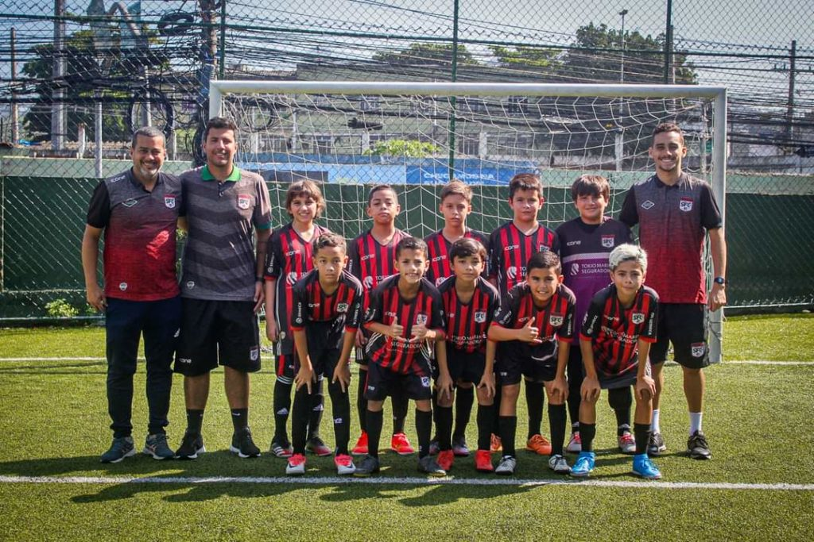

Our History
Ball Forward was founded in 2022 with the mission of providing opportunities for youth and adults to practice sports such as soccer, beach volleyball, and footvolley. We began our activities in Seropedica, Rio de Janeiro and have been working to transform lives through sports ever since.
With the growth of our community and support from volunteers and partners, we have expanded our programs and positively impacted many lives. Our journey is marked by achievements and challenges, but we always focus on creating an inclusive and welcoming environment for everyone.
Our Activities and Programs
- Soccer: Regular training sessions and tournaments for youth and adults.
- Beach Volleyball: Classes and competitions at our beachside facilities.
- Footvolley: Training and events to promote learning and practice of this sport.
- Social Programs: Initiatives to encourage inclusion and mental health through sports.
We are always looking for new ways to engage the community and promote an active and healthy lifestyle. Join us and be part of this transformation!
Gallery and Videos
Explore some highlights of our programs and activities:
